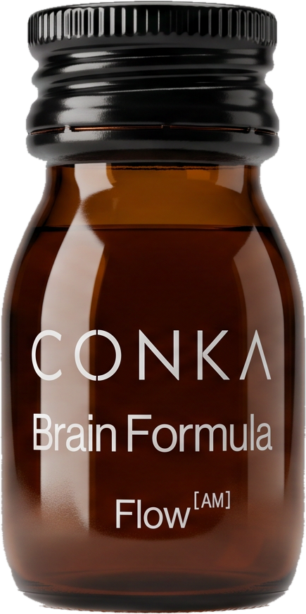
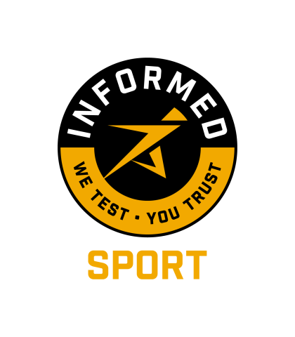

A
Sharper
Mind.
The daily morning brain shot for sharper, calmer focus.
Focus & Clarity
All-Day Energy
Calm Under Pressure
Stronger Cognition

6 CLINICALLY DOSED ADAPTOGENS
INFORMED SPORT CERTIFIED